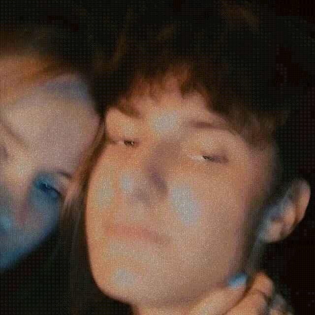
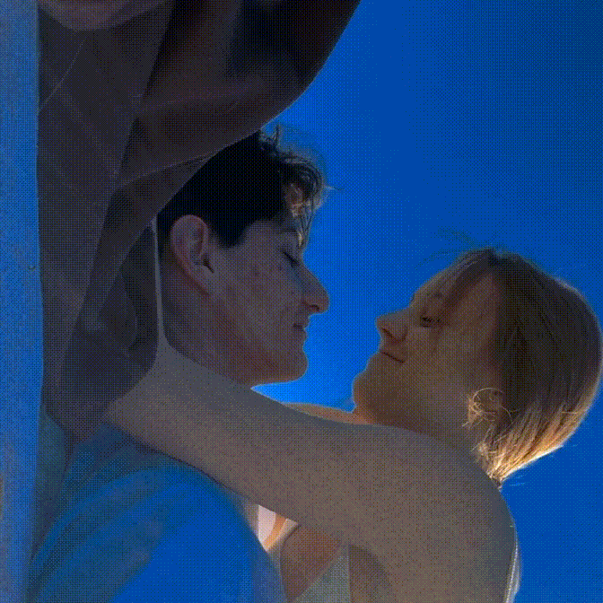
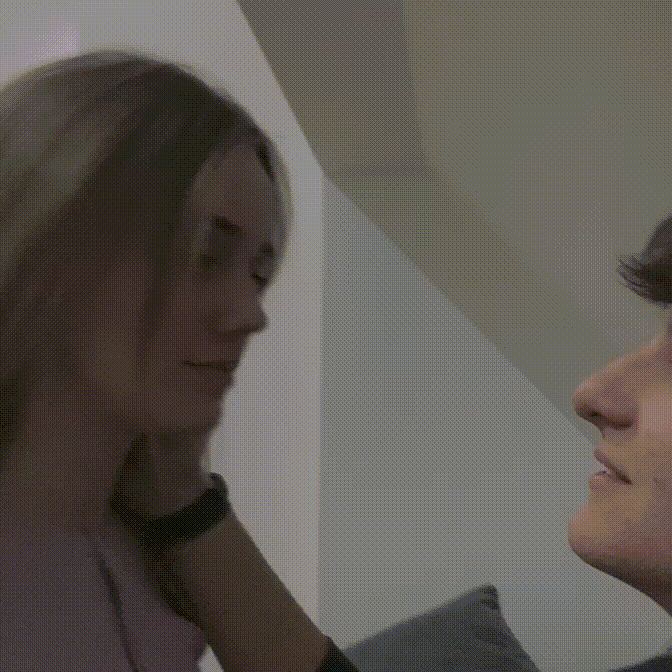
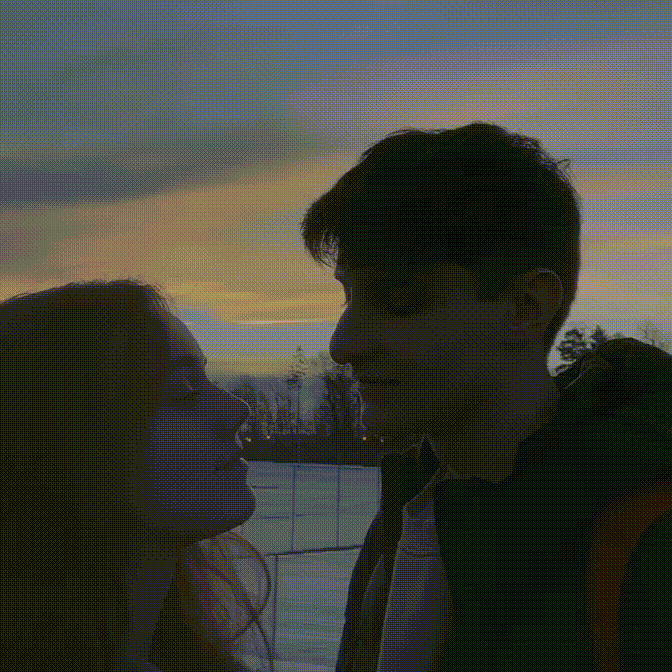

Sierpień
chyba nie musze tu nic pisac. moje najlepsze urodzinki, i dodatkowo najlepszy dzien w moim zyciu. wtedy wszystko sie zaczelo

Wrzesień
jedno z pierwszych jak nie pierwsze nasze spotkanie po szkole.
lezelismy sobie wtedy na laweczce, teraz by w sumie to troche bylo dziwne ale i tak bylo super XD

Październik
przyjechalem wtedy do ciebie, bylismy na chwile w domu, ale potem stwierdzilismy,
ze idziemy na piknik. jedno z najslodszych wspomnien z toba. bylo cieplo i byl taki super vibe jeszcze z ta muzyczka.

Listopad
twoj polmetek, bylo zajebiscie, super sie bawilem z toba i mam nadzieje ze ty ze mna tez.
pamietam ze wtedy tez plakalas a ja cie pocieszalem ale nic sie nie stalo i tak bylo fajnie. dziekuje, ze mnie wzielas.

Grudzień
przyjechalem wtyedy do ciebie przed swietami. dostalem super matching koszulke od ciebie.
pozniej poszlismy sie przejsc do parku i wrzucalismy sie do sniegu.

Styczeń
Wtedy chyba bylem u ciebie. nie no nie chyba tylko napewno bo
swietnie pamietam ten sweterek XD. ale bylo super i podobalo mi sie bardzo

Luty
To bylo jakos po szkole chyba. bylismy sie wtedy przejsc i
wtedy dalas mi to serduszko na magnez ktore teraz nosze na lancuszku.
chyba bylismy tez wtedy w botanice i wylalas kawe XD

Marzec
to bylo na grillu u guziaka na dzialce, cala droge narzekalas ze zle sie
tam wchodzi XD. ale no ogolnie to fajnie bylo wtedy i od wtedy tez michas jest z paulina

Kwiecień
18stka tupka, super bylo, zmontowalismy mu super filmik.
chyba nigdy nie tanczylismy razem tyle co wtedy.
a no i jakis dziadek nam opowiadal caly swoj zyciorys

Maj
Jakos dlugo sie wtedy nie widzielismy i w ogole poklocilismy sie o cos.
dalem ci kwiatkia i mialas sobie wybrac z jakiej okazji. wygladalas super ladnie
i potem bylismy jeszcze na kawie i mam twoje takie bardzo ladne zdjecie

Czerwiec
to bylo po moich egzaminach zawodowych. iza nas zabrala wtedy z miloszem
na banie. nie widzialas jaki stroj wziac wiec wzielas 2(wybralas ten lepszy XD)

Lipiec
stwierdzilismy, ze musimy zrobic powtorke naszego spacerku nad bialke.
opalalismy sie, sluchalismy muzyczki i kapalismy sie w zajebiscie zimnej wodzie. bylo zajebiscie